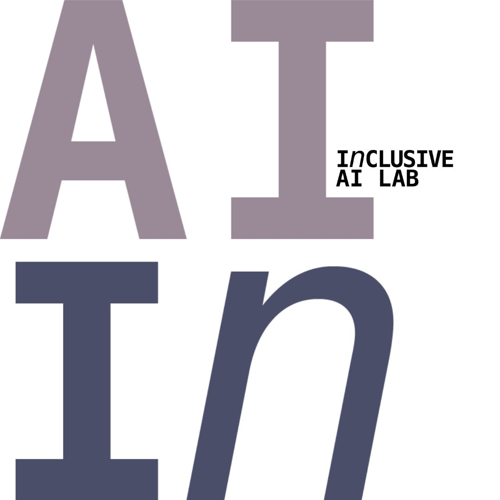

University of Bologna
Algorithms, explainability, verification and validation, human oversight, fairness, robustness and compliance by design.
TRUST-AI brings together leading institutions to advance AI that is trustworthy, inclusive, sustainable and compliant: from technical design to governance, regulation and real-world adoption.
AI is transforming every sector of society. Keeping it human-centred, inclusive, sustainable and compliant requires collaboration that joins technical and societal perspectives from the outset.
Five institutions, complementary expertise, one shared initiative across the AI lifecycle.
Algorithms, explainability, verification and validation, human oversight, fairness, robustness and compliance by design.
Software engineering, lifecycle management, MLOps, testing frameworks and practical deployment guidance.
Governance frameworks, accountability, human-centred AI, democratic values and institutional capabilities.

Digital inclusion, fairness, diversity, accessibility, human rights and participatory approaches.
Legal and regulatory frameworks, compliance, risk governance, health AI governance and regulatory innovation.
TRUST-AI is formally introduced at the DAMA Bologna Technopole.